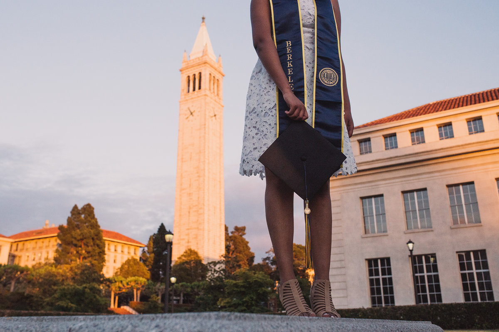
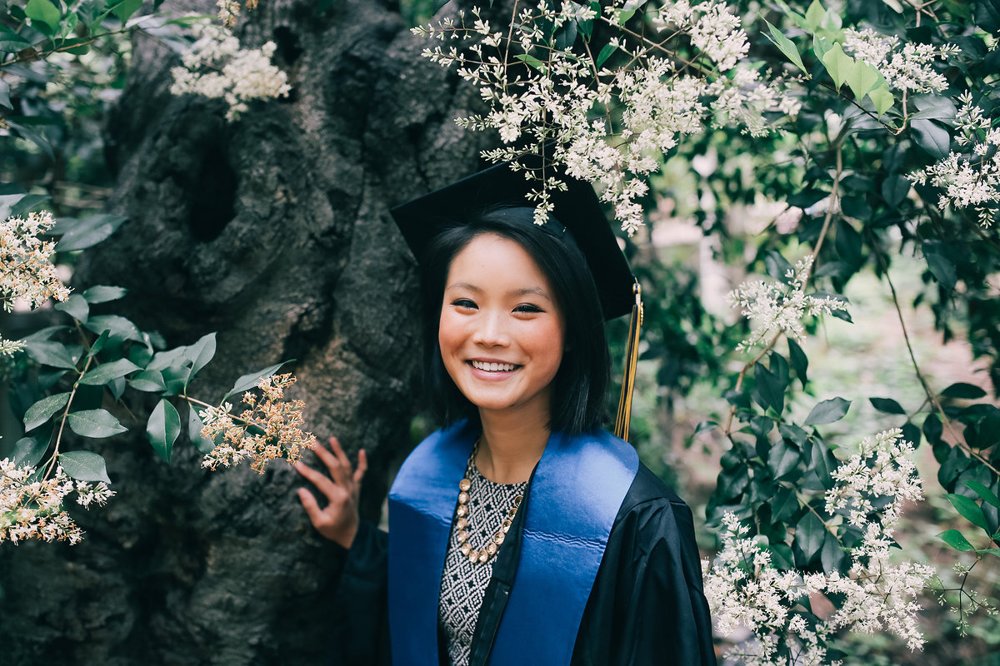
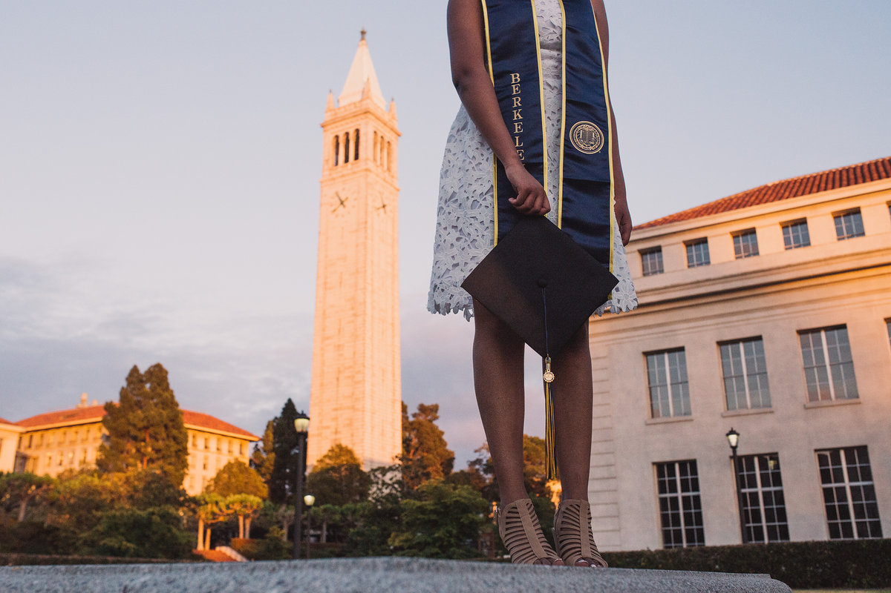
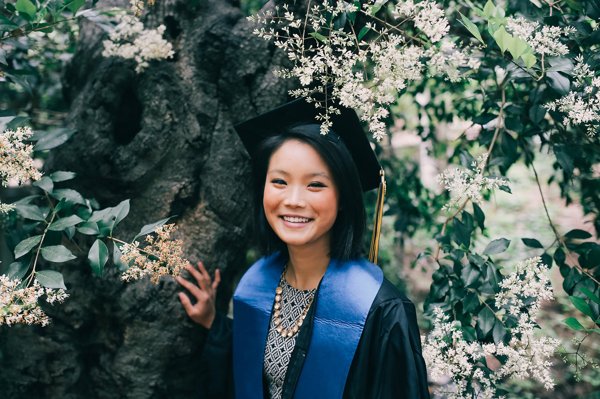
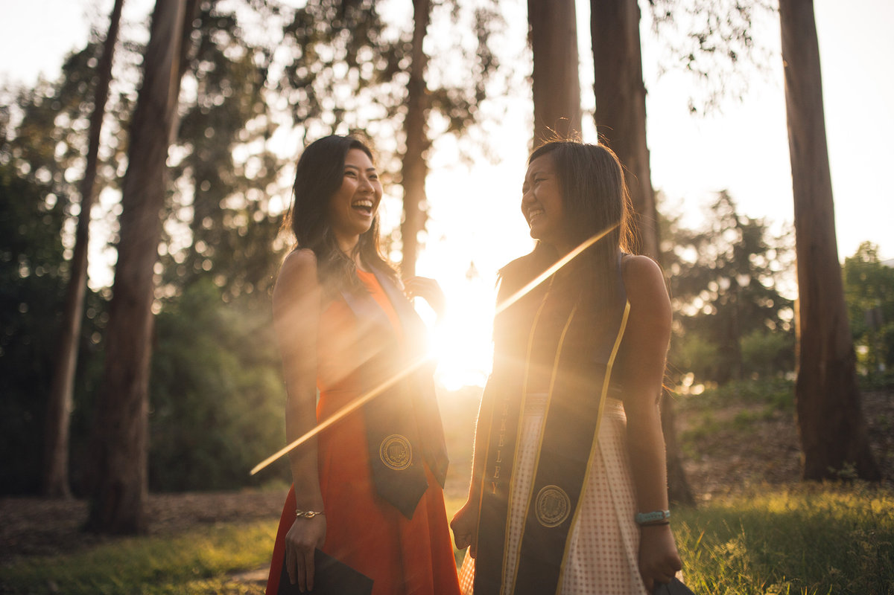

First and foremost, location is extremely important when it comes to taking grad photos. For one, it's the easiest way to help represent the school, and it helps to make the photo more interesting. Therefore, it's best to choose landmarks at your school (such as the Campanile at Berkeley, or in general the main library). However, also talk to your grads about where they want to shoot. Often times they'll bring great ideas or want to shoot at their major's building. Also, try mixing in some scenic nature locations as well so there's a broad range of variety to the photos. This may require some scouting of sites beforehand, so be up for some adventure and don't limit yourself! Lastly, be weary of how much time you have, because you don't want to waste a lot of time walking from place to place, so try mapping out all of the locations beforehand to minimize travel time.
 






Next, it's important to check the lighting in the location you choose. As a general rule of thumb, it's easier to shoot on cloudy days than it is on sunny days, as the light is diffused and no harsh shadows are created. However, if you are shooting on a sunny day, try to keep the light source behind your subject for the most flattering results. If this is not possible, it may not be best to be shooting at your location at the current time of day, and either communicate this with your grads or be creative and try shooting from a different angle. Shade is also your friend, so try to get your grads to stand in the shade for photos. Also, when shooting, position your grads first and then position your camera after to try and make the best of the lighting that you have. Always keep lighting in mind when shooting, as it can make or break a photo!


Lastly, pose your grads! If you're working with one person, get them to try a variety of poses to try and switch up the results so you aren't taking the same photo over and over. Try things like putting their hand on their hips (usually the closer arm works better), crossing their ankles, or looking over their shoulders. Guys are typically harder to pose in my experience, but having them put their hands partially in their pockets works fairly well. ALWAYS look at their hands and make sure they don't look awkward, as well as how their legs are positioned. If you're working in groups, always be weary of how close they are together, and try keeping that spacing equal. If you can, have them sit down for a few shots as well. For both, getting them to laugh is key. Usually just asking them to laugh works, but keeping a few jokes memorized may be helpful for those who can't laugh on command.
- Make sure to keep editing consistent, and try to gauge what the person wants for the final result
- Be friendly! If you haven't met them previously, just make conversation with them and ask questions and make it a comfortable environment
- Try showing them the photos as you go to make sure they're happy with the results and how they look in the photos
- Encourage them to bring props! Try to make their photos unique, fun, and creative
- Make sure to get a few with their cap and gown on. A lot of times grads will only want photos with their stole, but it'll be good in general to at least try to get a few with everything
- See if they can bring a friend. It'll help them be more comfortable, will decrease travel time, and could help you get more candids of them laughing
- Communicate! Be sure to direct them if needed, address concerns, and keep everything transparent
- Have fun! If you're dreading it, it'll show through in your photos
I'm

I am a 21 year old photographer and student currently studying civil engineering in Berkeley, CA, and will be graduating this May. I have had over 50 grad shoots in the past year, coming out to over 30,000 photos.
If you have any further questions, contact me at andiebiggs14@berkeley.edu
You can find my portfolio here